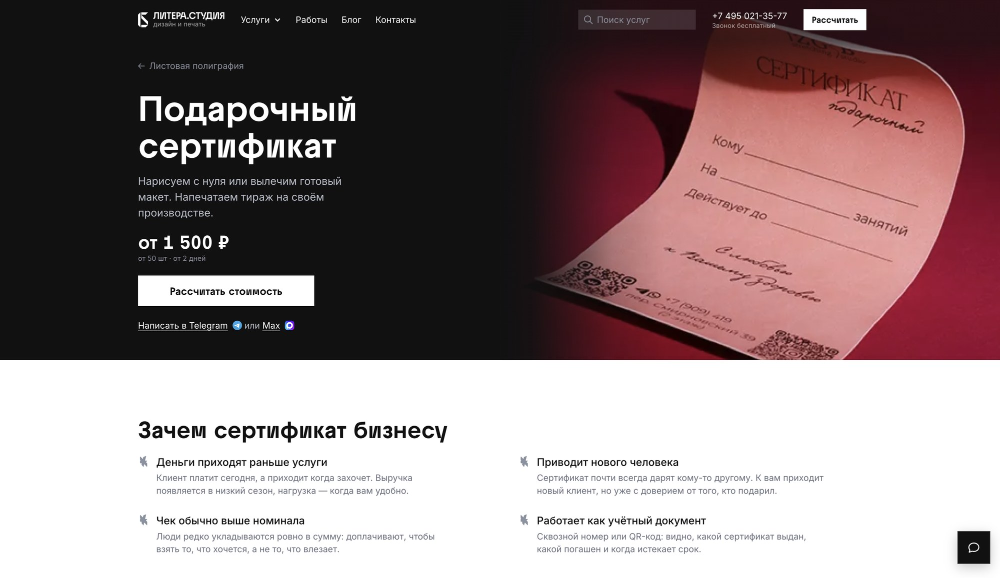
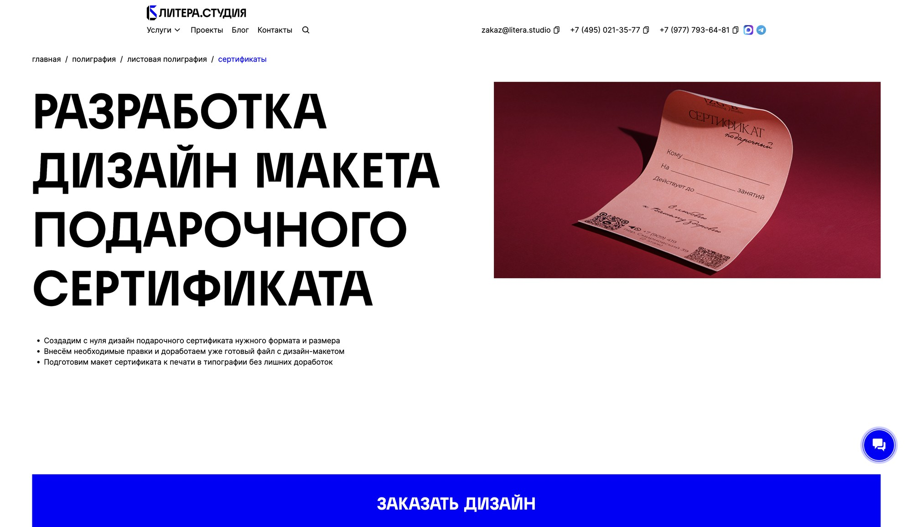
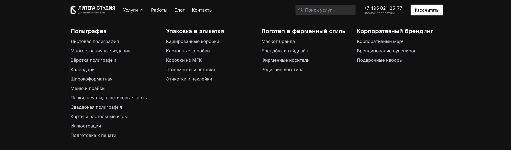

Litera.Studio — site audit and rebuild
In development — live demo.
Print and graphic design studio, Moscow, 13 years in business. WordPress + WooCommerce, services listed as products: 226 services, 36 categories, 30 articles, 6 written case studies, 816 portfolio work photos.
No brief — I proposed the direction myself. Scope, agreed by email: free to restructure and rebuild, as long as SEO weight carries over through redirects. The client wanted everything at once — leads, speed, search traffic, brand — so I prioritized by data, not by eye.
No admin or theme access. Everything below came from outside the CMS: a full crawl, a year of Yandex Metrika, and a raw log of outgoing WordPress emails a developer happened to still have.


The audit
Homepage, desktop: 133 requests, 9.8MB. Images alone: 46 requests, 8MB, 0% in WebP. Zero of 93 images lazy-loaded. HTML was 911KB — one whole section shipped as a base64 image.
Crawled and locally mirrored all 262 catalog pages to quantify the rest:
| Defect | Scale |
|---|---|
| Base64 images inline in HTML | 250 of 262 pages, up to 426KB per page |
loading="lazy" | 0 pages, out of 20,908 <img> tags |
<img> with no alt | 7,276 of 20,908 — 35% |
| Price missing from page text | 186 of 262 pages |
Content: median unique text per product page was 171 words on 567KB of HTML. 182 of 226 pages fell in the 100–200 word band — templated for search engines, not written for a person. A third of all page pairs shared over 70% of their text; a tenth shared over 90%. Four pages for a tray product, identical copy, the only real difference a diagram image.
Information architecture: 36 categories, four levels deep on flat URLs — the hierarchy existed only in the nav, not the address. One category contained itself ("Packaging & labels" nested inside "Packaging & labels"). 13 duplicate design/layout page pairs. 18 near-identical ad-format pages, one per platform, same copy with the platform name swapped in.
Mobile: the category page opened on four uncaptioned photos and a cookie banner
sitting over the headline. The one unique paragraph that page existed to rank for
was at the very bottom, small, truncated behind "read more." The <title> for one
page promised a price ("from 1,100₽") that appeared nowhere on the page itself —
a direct, measurable cause of bounces.
Decisions made from data, not taste
801 real leads, recovered. The client had no export tool beyond a Gmail inbox. A developer sent the raw WordPress mail log instead — 2,853 records, every field of every submitted lead sitting inside the email body. Parsed it, dropped one anomalous month, kept the trailing year: 801 leads. That dataset overturned two of my own assumptions going in. I'd planned to drop the contact-channel radio buttons as friction — the data said 58% of users manually changed the pre-selected default (WhatsApp 42%, Telegram 35%, phone 11%, email 8%, a fifth messenger 5%): the choice mattered, it stayed. I'd planned to cut the free-text comment field — 85% of submitters used it.
Catalog: 36 categories → 4. I split 222 real services by script — no
losses — the other 4 of the 226 catalog entries were section-index pages
(/poligrafiya and similar), not individual services. Proposed 6 groupings,
the client's director approved 4 and cut two categories outright ("not our business").
The data backed the cut: those 52 pages accounted for 832 visits and 13 leads across
the whole year.

Form redesign. Mobile is 58% of traffic and converts a quarter worse than desktop (2.22% vs 2.77%) — the argument for keeping the form short. Phone required, email optional, name optional, a task field, channel choice as chips (Telegram default, not WhatsApp — accounts for blocking risk), file attachment, cross-field validation (email-only contact + "call me" selected gets flagged).
On-site search — checked whether it was needed before building it. 939 searches in a year, 0.41% of traffic, and the top query counts were suspiciously flat (73, 72, 69, 69 — bot traffic). Real signal only in the long tail: typos, seasonal terms. Built a client-side service picker instead of a search backend: 170 items in a 13KB file, suggestions from the first letter, no server round trip, no results page. Typo normalization pulled straight from the query log, plus a synonym dictionary. A "describe your task" fallback carries whatever was typed straight into the lead form, so nothing gets retyped.
Rejected the client's own branding idea. The director wanted a "print clinic for business" metaphor. I argued against it and it didn't ship: going to a doctor implies fear, going to a print shop implies a deadline — the metaphor turns the client's task into an illness and the studio into the doctor, which puts the studio above the client it's meant to serve. Kept the brief's actual tone instead: "we won't recommend something bad" now lives on the page in the studio's own words, without the clinic framing.
Three desktop hero directions, built live, not mocked up. A — typographic: no photo at all, the sale carried by a full-width headline, the product photo pushed down to the next screen at its own proportion. B — the dark panel that shipped: headline and photo share one panel, half the screen each. C — a plain 50/50 split, full-height photo on the right. C was cut on a measurement: at full screen height the certificate photo filled only 41% of its column at 1.89× zoom — enough upscaling for the diagonal fold in the paper to visibly fall apart — and fixing that for every service would mean reshooting each one vertical, from 1200px, a production cost the studio can't carry. Between A and B it was closer: A made the stronger case on paper (a studio that sells typography should lead with typography), but B kept the headline's weight and still gave the photo a place to prove the product is real. B stuck as the base for every screen since.
Composition — a bigger photo that still stays tidy. The product photo got bigger on purpose: full-bleed from the top of the panel to the bottom, no top or bottom padding like the first pass had (that read as "a picture dropped in, not part of the layout"), zoomed until 82% of the frame is product — the best ratio out of every crop tested. Bigger only stayed tidy because of the seam it needed next: the dark hero panel meets a product photo on every service page; the certificate photo used to build it is dark and even, so a real problem stayed hidden until the client sent a lighter, busier one (event tickets). Compared nine ways to join panel and photo — dissolve to black, to the photo's dominant color, to a color sampled off its edge, to white, an alpha mask instead of painted color, a perforated edge, a full accent tint, an accent in the header, an accent-colored veil — against a "muddiness" metric (mean brightness at low saturation), after a first metric (gradient smoothness alone) scored the sharp hard-edge version worst even though it looked best by eye — wrong metric, rewrote it. Paint color turned out not to matter: black versus a color sampled off the photo's own edge differed by 0.7 percentage points — the mud comes from translucent color sitting over a busy photo, not from hue (blue tested worse than black, mixing with an orange ticket into brown), and an alpha mask turned out to be arithmetically the same operation as painted color, same result. Shipped as a CMS toggle instead of one rule forced onto all 226 products — dissolve by default, hard edge as an editor override for photos that don't dissolve well. On mobile, the separate seam where the page scrolls up over that first screen gets a perforated edge instead — a tear-off-stub reference specific to print, chosen over a generic wave.
What I refused to build, and why
- No quiz — the existing one logged 274 completions against 3,449 for the form.
- No color-coding by category — the catalog gets little traffic (1,355 visits vs 14,368 for services), and color would compete with product photography.
- No dark theme — this is a print business; white reads as paper and shows true product color. Night traffic (23.8%) is irrelevant — dark mode is a system setting people leave on around the clock, not a night-specific choice.
- No per-card "file requirements" block — bleed and CMYK specs are identical across every service; one shared page beats a hundred places to keep in sync.
- No perforated header to match the scroll-layer edge — tested it; the product photo between two zigzag edges came out visibly smaller (198px high against 249px), doubling the decorative pattern on screen for a one-time snap-together moment instead of the perforation's usual persistent effect.
Engineering
Rebuilt as components specifically because the client's developers had complained
about the previous project — one inline HTML file, overlapping styles, no
documentation. Result: index.html at 46KB instead of 218KB in one file, 19
component stylesheets, 10 scripts, zero inline styles, zero inline scripts, zero
base64 — the exceptions are the JSON-LD blocks (breadcrumb, service, FAQ schema),
which search engines only read inline. Measured the prototype against their live
site: 0.68MB vs 9.8MB, ~35 requests vs 133, WebP with a JPEG fallback, lazy-loading
and alt text everywhere.
Verification rule for the whole project: visual changes get checked by render, never
by reading code. That surfaced real bugs an emulator wouldn't have — over a third of
the site's iPhone traffic is XR/11-class hardware (more than half in the most recent
quarter), so the notch got checked against real device values instead of a simulator
default: it needed both header height and inner padding substituted together
(get only one right and the header looks broken even though the device would have
rendered it fine), and a horizontal-scroll bug on mobile traced to flex items not
shrinking below their content width without min-width: 0.
Status
Two pages built and live as a prototype — the pitch to the client hasn't happened yet, a rehearsal pass comes first. Tablet/desktop adaptive layout and developer documentation are still open. A few items sit on the client's side: an actual privacy policy (the current link points to a data-processing consent form instead), a company registration number with a checksum-verified typo, real prices and turnaround times, and image usage consent for published client work.